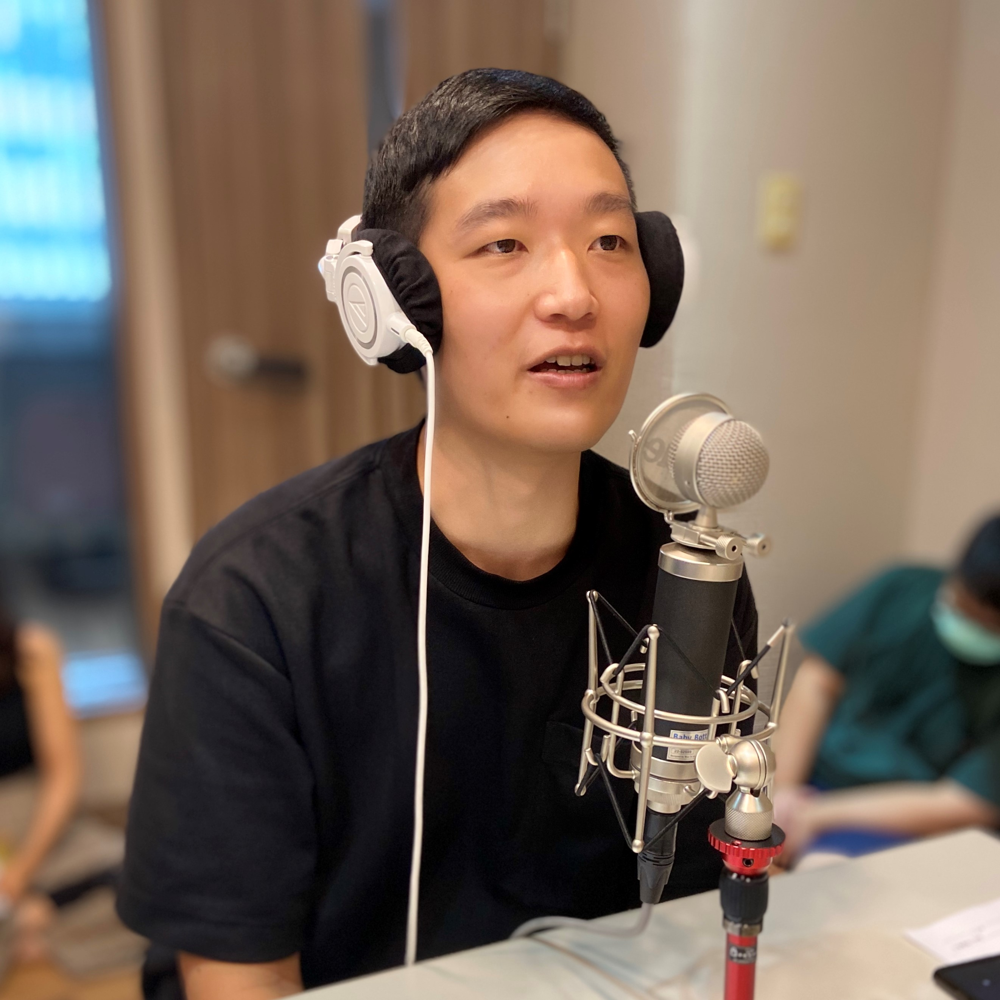
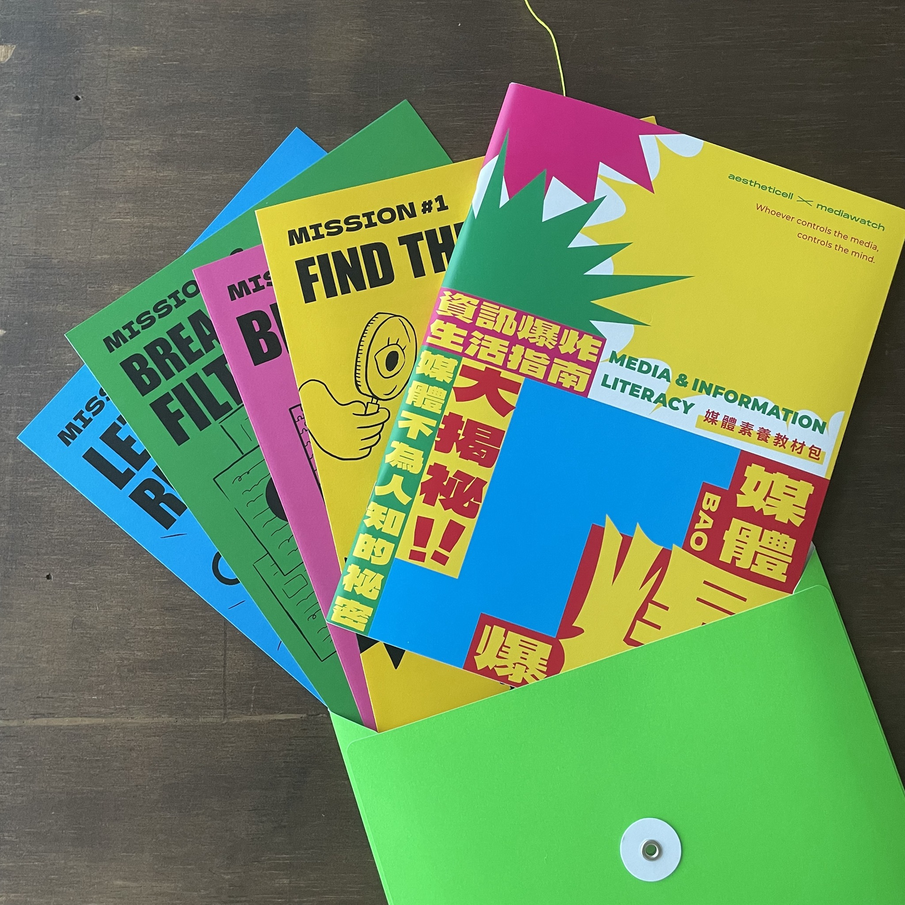

鄭人豪
簡歷
邏輯思考｜研究分析｜議題設定｜溝通協調｜解決問題
我畢業於國立臺灣師範大學大眾傳播研究所，具備社會學及傳播研究背景，接受多年社會科學專業訓練。擅長研究分析，熱衷於了解事物的來龍去脈。畢業後長期任職致力媒體監督觀察的非營利組織，除撰寫研究報告及分析文章外，也投入媒體內容企劃製作。2020年開始企劃製作主持「逆食News—媒體議題Podcast」；2021年開始企劃製作「媒體大事」媒體議題圖文，並參與編撰《媒體爆爆 — 資訊爆炸生活指南》媒體素養教材。職涯累積豐富的專案企劃及執行經驗，擅長溝通協調及解決問題。
工作經驗
研究發展組組長
台灣媒體觀察教育基金會 2017/10 - 在職中- 統籌媒體研究專案執行
- Podcast及圖文內容企劃、製作
- 講座、論壇及記者會企劃及執行
- 倡議文章、新聞稿及聲明撰寫
- 社群平台經營
「十二年國教課綱宣導影片拍攝計畫」計畫助理
國立臺灣師範大學 2018/6 - 2020/3- 統籌專案執行
- 影片拍攝協調及溝通
- 行政庶務及專案報告撰寫
發行助理
群學出版社 2014/9 - 2017/9- 協助圖書發行工作
- 協助校對稿件
實習編譯
紐約時報中文網 2015/11 - 2016/3- 「每日新聞圖片」單元之圖說翻譯
- 提供文章翻譯意見
專案成就
逆食NEWS－媒體議題Podcast
2020年開始企劃製作，為全台第一個專注討論媒體公共議題的Podcast節目，藉助Podcast聽眾高聆聽時間和高黏著度的特性，深刻討論媒體相關公共議題以及媒體素養教育議題。節目至今製作 26集，累積收聽次數超過1萬。
「媒體大事」媒體議題圖文
2021年8月開始企劃製作「媒體大事」媒體議題圖文，發布於組織Facebook粉絲專頁及Instagram帳號。以一至二週產出一篇的步調，整理並分析過去一段時間重要的媒體相關公共議題。至今產出近三十篇圖文內容。
《媒體爆爆 — 資訊爆炸生活指南》
2021年與「美感細胞 教科書再造計畫」合作，參與規劃、撰寫台灣第一本專為中學生設計的媒體素養教育教材。 教材收錄媒體產權、內容產製流程以及社群媒體演算法等當代重要媒體議題，並嘗試以平易近人的行文方式，將相關知識傳授給學生。此份媒體素養教材目前已於近百所學校使用。
